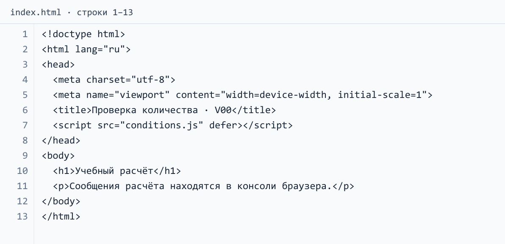
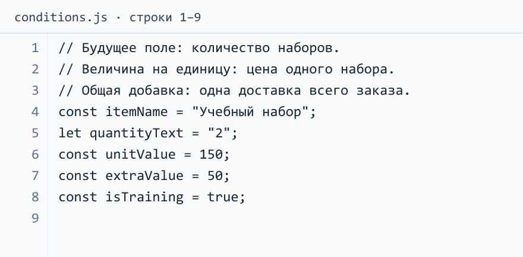
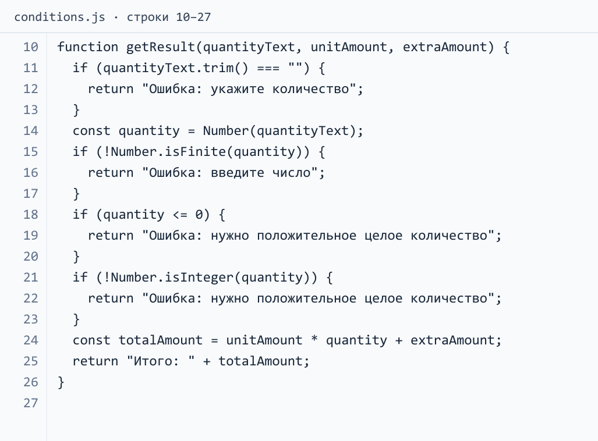
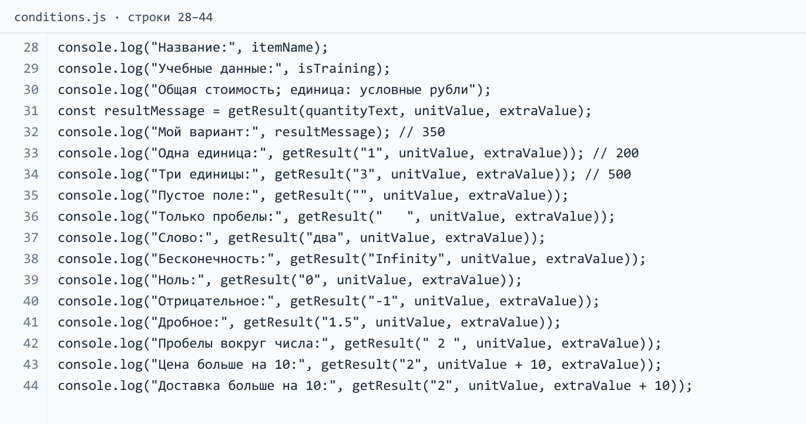

Учебный вариант 00 — пара 20
Постоянное задание для разбора преподавателем. Продолжает расчёт пары 19. Способ выполнения по небольшим шагам — в статье пары 20. Студенты применяют этот способ к своим данным, а не заменяют свой проект наборами.
Что должно уметь приложение
Человек выбирает «Учебный набор» и указывает количество. Нужен ответ: сколько стоит весь заказ с одной доставкой. Пустое поле, слово, ноль, отрицательное или дробное количество должны давать понятное сообщение вместо суммы.
Сегодня количество изображается строкой в файле, результат выводится в консоль. В будущем строка придёт из поля количества, а сообщение появится рядом с формой. Чтение HTML и обработка кнопки сегодня не выполняются.
| Что означает | Внешнее имя | Данные |
|---|---|---|
| Выбранная позиция | itemName |
"Учебный набор" |
| Содержимое будущего поля | quantityText |
"2" |
| Цена одного набора | unitValue |
150 условных рублей |
| Одна доставка всего заказа | extraValue |
50 условных рублей |
Все данные вымышлены. Формула: цена одного набора × количество + одна доставка. Для двух наборов: 150 × 2 + 50 = 350.
Соберите и проверьте
- Подключите отдельный
conditions.jsк главной странице. Для автономного разбора достаточно обычной HTML-страницы с подключением этого файла; оформление не требуется. - Объявите исходные данные. Создайте
getResult(quantityText, unitAmount, extraAmount)и один вызов; сохраните результат вызова в переменную, выведите её. - Внутри функции преобразуйте строку в число и соберите формулу из параметров. Верните строку
Итого:с вычисленным значением. - До преобразования добавьте отказ для пустого текста, включая одни пробелы.
- После преобразования добавьте отказ для нечислового и бесконечного значения.
- Перед формулой добавьте отдельные отказы для неположительного и нецелого количества.
- Сохраните одиннадцать подписанных испытаний из статьи. Добавьте две проверки изменения числовых аргументов.
Функция объявляется один раз. Её полную реализацию соберите по шагам статьи; готовое число 350 не подставляется вместо вычисления.
С чем сравнить результат
| Количество | Ожидаемое сообщение |
|---|---|
"2" |
Итого: 350 |
"1" |
Итого: 200 |
"3" |
Итого: 500 |
"", " " |
Ошибка: укажите количество |
"два", "Infinity" |
Ошибка: введите число |
"0", "-1", "1.5" |
Ошибка: нужно положительное целое количество |
" 2 " |
Итого: 350 |
При двух наборах увеличение цены одного набора со 150 до 160 даёт 370. Увеличение только доставки с 50 до 60 даёт 360. Исходные константы сохраняются: эти опыты — отдельные вызовы с другими аргументами.
Покажите: подключение файла, самостоятельно собранную функцию, результаты испытаний и путь одного неверного значения до первого выполненного return. Назовите, откуда в будущем придёт строка и где пользователь увидит сообщение. Отдельного отчёта нет.
Подсказки для разбора
Сначала соберите функцию по шагам статьи и проверьте её. Затем раскройте нужную подсказку: код показан изображениями, а пояснения помогают найти причину расхождения. Изображения JavaScript идут подряд и составляют один файл conditions.js; номера строк продолжаются от части к части. Для чтения с телефона откройте изображение отдельно и увеличьте его.
Подключение программы: index.html
Для отдельного показа создайте папку Variant00-conditions. Сохраните в ней HTML-страницу и conditions.js рядом. При работе со своим проектом достаточно заменить подключение программы в существующем index.html.


conditions.js, часть 1: исходные данные
Количество пока задано строкой в файле. Цена одного набора — 150, одна доставка всего заказа — 50. Признак учебных данных выводится отдельно и в формулу не входит.


conditions.js, часть 2: проверка и возврат результата
Проследите путь одного значения до первого выполненного return. Пустую строку проверяют до преобразования в число; остальные отказы тоже стоят перед формулой. Возврат и вывод — разные действия: функция отдаёт сообщение, а вызывающая программа показывает его. Значения передаются параметрам по порядку аргументов.


conditions.js, часть 3: вызовы и испытания
Сохраните файлы в UTF-8, откройте HTML, затем F12 → Console / Консоль и обновите страницу. Последние два результата — «Итого: 370» и «Итого: 360». Для ошибочных входов функция возвращает причину без рассчитанной суммы. Числовые аргументы меняются в отдельных вызовах; исходные константы сохраняются.


Пример считает стоимость наборов, а в своём варианте вы сохраняете собственные величины и единицы. Сверяйте смысл действий и результаты; одного совпадения текста программы недостаточно, чтобы объяснить её работу.